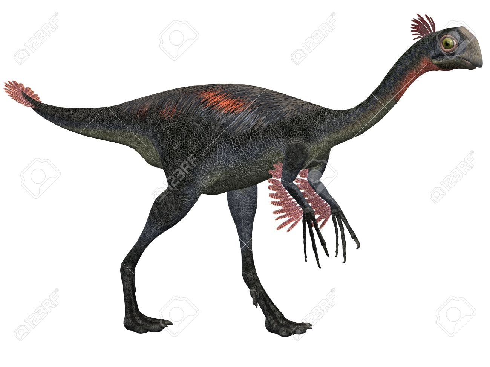

Discovered in 2005 by Xu Xing in the Iren Dabasu Formation of Mongolia,
Gigantoraptor is a dinosaur that has been sort of a mystery to paleontologists.
It was first classified as a tyrannosaur, but later bone discoveries made paleontologists
change their minds and they decided to put it into the Oviraptorosauria dinosaur group.
However, most dinosaurs that are in this group are only a few pounds and this one is much more massive.
Up to 300 times bigger than most of the dinosaurs that exist in this family.
An interesting fact about this dinosaur is that Gigantoraptor’s name means “giant thief”,
but this is somewhat of a misnomer because this dinosaur doesn’t belong to the raptor family.
It isn’t related to the true raptors of the time such as Utahraptor or Velociraptor. Instead it is more
closely related to dinosaurs such as Caudipteryx and Avimimus.
This dinosaur is one of the largest beaked dinosaurs to have ever been found.
It was about 25 feet long, 16 feet high and weighed approximately 2 tons. It was probably an
omnivorous dinosaur who lived off of plants and fruits, eggs, smaller dinosaurs and maybe even crustaceans.
This dinosaur lived approximately 85 million years ago during the late Cretaceous Period and roamed the plains
of central Asia.
Gigantoraptor was a very unique looking dinosaur when it was alive.
It was not only fairly large, but it also had some distinguishing features.
It had a beak like a bird and may have even had feathers, making it look more like a giant
bird than a dinosaur. And its head may have been colored like that of a rooster, in brilliant
shades of red and orange, making it an impressive sight indeed.